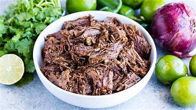

Barbacoa

Delicious barbacoa
An easy crockpot meal that will always impress the family
Ingredients:
- Beef Cheek
- Yellow Onion
- Garlic
- Bay Leaf
- Salt
Steps:
- Rinse beef cheek and set in crockpot
- Cut onion in half and place in crockpot
- Add two to three cloves of garlic
- Add bayleaf
- Generously sprinkle salt
- Cook on high for 8 hours, or low for 12